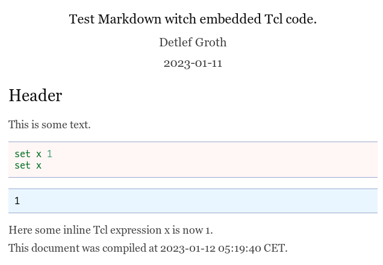

2024-11-28
Currently the filter for function for pandoc version larger than 3.0 is broken, only the standalone line filtering does work!
Standalone Tcl application for document conversion with support for Tcl based filters using the Pandoc document processor or Tcl only.
For a overview about the Pandoc Tcl filter you can see as well the presentation at the presentation at S & T 2021.
The application pantcl(.bin) is a command line tool
which can be used as a standalone tool for document conversion from
Markdown to HTML. In the Markdown document as well code for programming
languages like Tcl, Python, C++, Go or other tools like diagram creation
tools, image creation tools or for instance music note processors can be
embedded. For processing other input formats like ReStructuredText, Wiki
Syntax, LaTeX it can be used as well as a filter for the pandoc document
processor. This way it is as well possible to target other output format
like docx, pdf and many others. The tools contains as well a graphical
user interface for direct editing of code for graphical tools like
GraphViz, PlantUml and many others.
So in summary pantcl allows you:
#' prefix followed by Markdown codeHere are links to the documentation:
External filter(s):
Please note, that you must have a tclsh executable in your PATH to
use this tool. On Ubuntu systems you can install Tcl using your package
managers like this: sudo apt install Tcl. If you have a
tclsh executable in your PATH you then
download the latest build from the Github page here:
https://github.com/mittelmark/pantcl/files/11603113/pantcl.bin.gz
Unpack the Gzip file and make the file pantcl.bin executable using
chmod. You can as rename it for instance to just pantcl.
Then move it to a folder within belonging to your PATH
variable. For instance “~./bin” or “~/.local/bin”.
Before you continue check if you executable is working by writing in the terminal something like this:
$ pantcl --version
0.9.12
$ pandoc --version
pandoc 2.14.2
...For Windows you should download the standalone executable which
contains a Tcl library and all required libraries and files within. https://github.com/mittelmark/pantcl/releases/download/0.9.11/pantcl.exe.
Just dowload the file to your harddisk and place it somewhere in your
PATH. The in a terminal window, Powershell, Cmd, etc. type
pantcl --version if this works you should be able to use it
a Pandoc filter.
Without an installed pandoc executable only conversion from Markdown to HTML can be performed.
The file pantcl.bin contains embedded all the filters
mentioned above. You can try out the installation by creating a simple
Markdown file with some embedded Tcl code like this:
---
title: Test Markdown witch embedded Tcl code.
author: Detlef Groth
date: 2023-01-11
tcl:
eval: 1
---
## Header
This is some text.
```{.tcl eval=true}
set x 1
set x
```
Here some inline Tcl expression x is now `tcl set x`.
This document was compiled at
`tcl clock format [clock seconds] -format "%Y-%m-%d %H:%M:%S"` CET.Save this code in a file test.md removing the leading
whitespaces and try to convert the file using the command line:
pantcl.bin test.md test.html -sThe output test.html should then look like this:

If this works you can continue and try to use other code filters from the list shown above.
Please note, that since version 0.9.2 the filter evaluation is per
default set to false to avoid interpretation just by accident. You must
enable filter evaluation either on individual code chunks by setting
eval=true as the code chunk option as shown above or if you
like to have it globally enabbled by writing it in the YAML header of a
Markdown document like this:
---
title: xyz
author: nn
date: 2023-03-11
tcl:
eval: 1
dot:
eval: 1
---Which would enable code evaluation for Tcl and graphics generation for every GraphViz dot code chunk.
If your input document does not support YAML headers you can provide a YAML configuration in an external file, an example can be seen in the file tests/sample.yaml. You then provide the required argument for the pandoc document converter in the command line like this:
pandoc sample.rst --filter pantcl -o sample-rst.html -s \
--metadata-file sample.yamlHow to define chunk options in Rst files can be seen here in the file tests/sample.rst.
Here an example for an inserted GraphViz dot code chunk in such an Rst file:
.. code-block:: dot
:caption: GraphViz dot example
:eval: true
digraph g {
A -> B ;
}
To create a PDF file you could use a command line like this:
pandoc sample.rst --filter pantcl.tcl -o sample-rst.pdf \
--metadata documentclass=scrartcl --metadata-file sample.yamlHere the resulting output file sample-rst.pdf.
There is as well support for LaTeX as input file format. You just
must use the Verbatim (uppercase V) environment together
with the chunk options in brackets. The filtertype will be declared
giving the filter option. Here an example for a dot filter in your LaTeX
code:
\begin{Verbatim}[filter=dot,eval=true]
digraph g {
rankdir="LR";
node[style=filled,fillcolor=skyblue,shape=box];
A -> B
}
\end{Verbatim}If you like to hide the source code just specify
echo=false as an additional code chunk option. Here an
example input file tests/sample.tex
and here the output sample-tex.pdf.
The pdf document can be created with the following command line:
pandoc sample.tex --filter pantcl -o sample-tex.pdf \
--metadata documentclass=scrartclYou can as well run a graphical user interace to edit separate
diagram code files or to edit several code chunks in a Markdown
document. Just call pantcl with a option --gui like
this:
pantcl --gui test.mdHere you see a running session where you can go with your cursor into the different code chunks and if you press Ctrl-s for file saving the current code chunk is evaluated and the output is visible in the image window on top:

BSD 2-Clause License
Copyright (c) 2023, Detlef Groth
Redistribution and use in source and binary forms, with or without modification, are permitted provided that the following conditions are met:
Redistributions of source code must retain the above copyright notice, this list of conditions and the following disclaimer.
Redistributions in binary form must reproduce the above copyright notice, this list of conditions and the following disclaimer in the documentation and/or other materials provided with the distribution.
THIS SOFTWARE IS PROVIDED BY THE COPYRIGHT HOLDERS AND CONTRIBUTORS “AS IS” AND ANY EXPRESS OR IMPLIED WARRANTIES, INCLUDING, BUT NOT LIMITED TO, THE IMPLIED WARRANTIES OF MERCHANTABILITY AND FITNESS FOR A PARTICULAR PURPOSE ARE DISCLAIMED. IN NO EVENT SHALL THE COPYRIGHT HOLDER OR CONTRIBUTORS BE LIABLE FOR ANY DIRECT, INDIRECT, INCIDENTAL, SPECIAL, EXEMPLARY, OR CONSEQUENTIAL DAMAGES (INCLUDING, BUT NOT LIMITED TO, PROCUREMENT OF SUBSTITUTE GOODS OR SERVICES; LOSS OF USE, DATA, OR PROFITS; OR BUSINESS INTERRUPTION) HOWEVER CAUSED AND ON ANY THEORY OF LIABILITY, WHETHER IN CONTRACT, STRICT LIABILITY, OR TORT (INCLUDING NEGLIGENCE OR OTHERWISE) ARISING IN ANY WAY OUT OF THE USE OF THIS SOFTWARE, EVEN IF ADVISED OF THE POSSIBILITY OF SUCH DAMAGE.